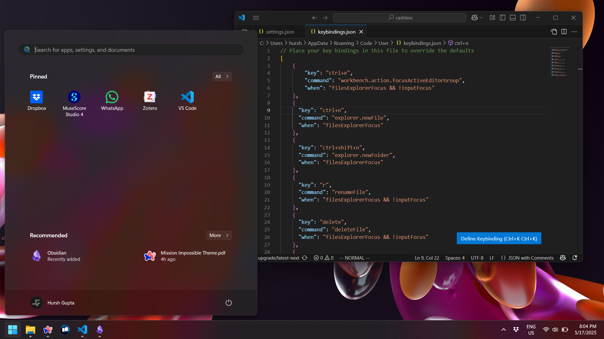

How I set up my new Windows machine
This is for a windows installation.

Fresh Installation¶
Debloat windows¶
Windows 11 is full of bloatware. NOT ACCEPTABLE! Remove all unnecessary stuff that are thrusted into our laptops/PCs by Microsoft.1
So, we will run this script from Raphire/Win11Debloat.
# Should work unless outdated, else use the link above
& ([scriptblock]::Create((irm "https://debloat.raphi.re/")))
- If you see a warning related to
wingetin the blue window, then install the app installer - Go with recommended settings (But do suggest you to clean out the taskbar and start menu.)
Realtek HD Audio Manager¶
I remember using the Realtek HD Audio Manager back when Windows 7 was peak. The manager allowed us to set default devices and have some low latency output monitoring
Other¶
Apps¶
Here are the apps that I use on my system. One suggestion is to use apps that do most of the things that you require to do.
Daily¶
Academics¶
Dev¶
Python¶
For using Tensorflow 2 in machine learning projects, we can download miniconda to get python installed and then load up this environment. This can be activated from anywhere and be used for all datascience projects. A really good base which includes most of the things needed
conda env create --file=https://raw.githubusercontent.com/ageron/handson-ml2/refs/heads/master/environment.yml python=3.8
VS Code¶
I use the vim extension with VS Code. These are my settings and keybindings.
{
"vim.easymotion": true,
"vim.incsearch": true,
"vim.useSystemClipboard": true,
"vim.hlsearch": true,
"vim.insertModeKeyBindings": [
{
"before": [
"j",
"j"
],
"after": [
"<Esc>"
]
}
],
"vim.leader": "<space>",
"vim.handleKeys": {
"<C-a>": false,
"<C-shift-e>": false,
"<C-f>": false,
"<C-p>": false,
"<C-w>": false,
"<C-shift-p>": false,
},
"vim.normalModeKeyBindingsNonRecursive": [
{
"before": [
"Ctrl+e"
],
"commands": [
"workbench.files.action.focusFilesExplorer"
]
},
// {
// "before": [":"],
// "commands": ["workbench.action.showCommands"]
// }
],
"vim.visualModeKeyBindingsNonRecursive": [
{
"before": [ ">" ],
"commands": [ "editor.action.indentLines" ]
},
{
"before": [ "<" ],
"commands": [ "editor.action.outdentLines" ]
},
// {
// "before": [ "p" ],
// "after": [ "p", "g", "v", "y" ]
// }
],
// "vim.statusBarColorControl": true,
// "vim.statusBarColors.normal": ["#1f1f1f", "#ddd"],
// "vim.statusBarColors.insert": ["9f9f9f", "#000"],
// "vim.statusBarColors.visual": ["#B48EAD", "#000"],
// "vim.statusBarColors.visualline": ["#B48EAD", "#000"],
// "vim.statusBarColors.visualblock": ["#A3BE8C", "#000"],
// "vim.statusBarColors.replace": "#D08770",
// "vim.statusBarColors.commandlineinprogress": "#007ACC",
// "vim.statusBarColors.searchinprogressmode": "#007ACC",
// "vim.statusBarColors.easymotionmode": "#007ACC",
// "vim.statusBarColors.easymotioninputmode": "#007ACC",
// "vim.statusBarColors.surroundinputmode": "#007ACC",
}
[
{
"key": "ctrl+e",
"command": "workbench.action.focusActiveEditorGroup",
"when": "filesExplorerFocus && !inputFocus"
},
{
"key": "ctrl+n",
"command": "explorer.newFile",
"when": "filesExplorerFocus"
},
{
"key": "ctrl+shift+n",
"command": "explorer.newFolder",
"when": "filesExplorerFocus"
},
{
"key": "r",
"command": "renameFile",
"when": "filesExplorerFocus && !inputFocus"
},
{
"key": "delete",
"command": "deleteFile",
"when": "filesExplorerFocus && !inputFocus"
},
{
"key": "ctrl+c",
"command": "filesExplorer.copy",
"when": "filesExplorerFocus && !inputFocus"
},
{
"key": "ctrl+v",
"command": "filesExplorer.paste",
"when": "filesExplorerFocus && !inputFocus"
},
{
"key": "ctrl+x",
"command": "filesExplorer.cut",
"when": "filesExplorerFocus && !inputFocus"
},
{
"key": "space",
"command": "filesExplorer.openFilePreserveFocus",
"when": "filesExplorerFocus && !inputFocus"
},
]
Hobbies¶
-
The only reason I am still using your OS and not Linux is the ability to use proprietary software ↩